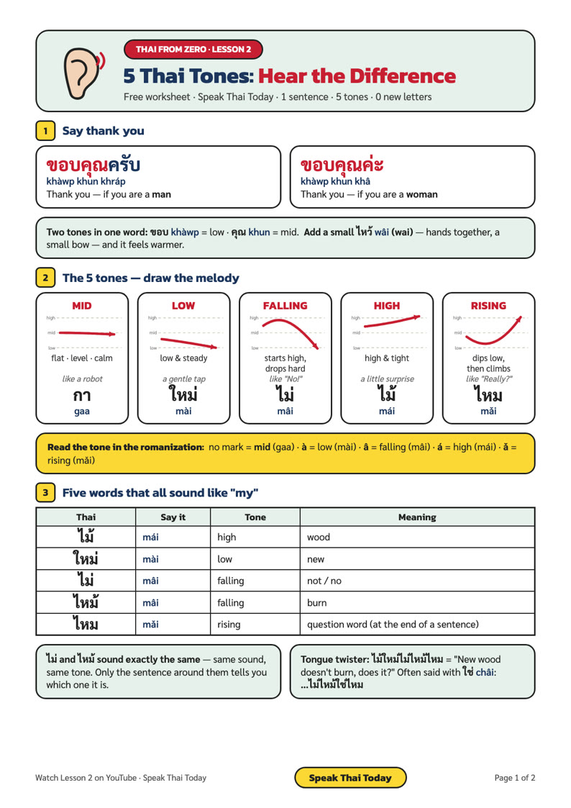

ขอบคุณครับ
khàwp khun khráp
ขอบ khàwp = low tone · คุณ khun = mid tone
ไม้ ใหม่ ไม่ ไหม้ ไหม — same sound, five meanings. Learn to hear the 5 Thai tones, say thank you, and grab the free printable worksheet.
Women end with ค่ะ (khâ), men end with ครับ (khráp).
ขอบ khàwp = low tone · คุณ khun = mid tone
Add a small ไหว้ (wâi) — hands together, a small bow — and it feels warmer.
Draw the line with your finger as you say each word.
| Thai | Say it | Tone | Meaning |
|---|---|---|---|
| ไม้ | mái | high | wood |
| ใหม่ | mài | low | new |
| ไม่ | mâi | falling | not / no |
| ไหม้ | mâi | falling | burn |
| ไหม | mǎi | rising | question word (end of a sentence) |

Say your answer out loud, then tap to check.
High — high and tight. It means wood.
ไม่ (not) and ไหม้ (burn) — both mâi, falling tone.
ขอบคุณครับ (khàwp khun khráp)
Rising — it dips low, then climbs, like asking "Really?" (ไหม mǎi)
💬 Comment challenge: which tone is the hardest for your ear? Tell us under the YouTube video!
Real Thai for travelers & expats, with a native Thai teacher — every lesson comes with a free worksheet.